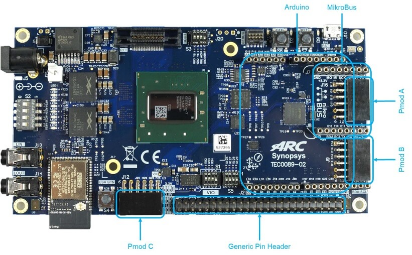

DesignWare(R) ARC(R) EM Software Development Platform¶
Overview¶
The DesignWare® ARC® EM Software Development Platform (SDP) is a flexible platform for rapid software development on ARC EM processor-based subsystems. It is intended to accelerate software development and debug of ARC EM processors and subsystems for a wide range of ultra-low power embedded applications such as IoT, sensor fusion, and voice applications.
{kind=link}
For details about the board, see: DesignWare ARC EM Software Development Platform (EM SDP)
Hardware¶
The EM Software Development Platform supports different core configurations, such as EM4,
EM5D, EM6, EM7D, EM9D, EM9D+ESP, EM11D, the default core configuration is EM11D. Use
CONFIG_SOC_EMSDP_EM4, CONFIG_SOC_EMSDP_EM5D,
CONFIG_SOC_EMSDP_EM6, CONFIG_SOC_EMSDP_EM7D,
CONFIG_SOC_EMSDP_EM7D_ESP, CONFIG_SOC_EMSDP_EM9D or
CONFIG_SOC_EMSDP_EM11D to select different core configuration.
The following table shows the hardware features supported for different core configuration:
Features |
EM4 |
EM6 |
EM5D |
EM7D |
EM7D_ESP |
EM9D |
EM11D |
|---|---|---|---|---|---|---|---|
Caches |
N |
Y |
N |
Y |
Y |
N |
Y |
DSP |
N |
N |
Y |
Y |
Y |
Y |
Y |
XY Memory |
N |
N |
N |
N |
N |
Y |
Y |
Secure |
N |
N |
N |
N |
Y |
N |
N |
For hardware feature details, refer to : ARC EM Software Development Platform
Programming and Debugging¶
Required Hardware and Software¶
To use Zephyr RTOS applications on the EM Software Development Platform board, a few additional pieces of hardware are required.
A micro USB cable to connect the computer.
A universal switching power adaptor (110-240V AC to 12 DC), provided in the package, which used to power the board.
Terminal emulator software for use with the USB-UART. Suggestion: Putty Website 2.
(optional) A collection of Pmods, Arduino modules, or Mikro modules. See Digilent Pmod Modules 1 or develop your custom interfaces to attach to the Pmod connector.
Set up the EM Software Development Platform¶
To run Zephyr application on EM Software Development Platform, you need to setup the board correctly.
Connect the 12V DC power supply to your board.
Connect the digilent usb cable from your host to the board.
Set up Zephyr Software¶
Building Sample Applications¶
You can try many of the sample applications or tests, but let us discuss the one called Hello World. It is found in samples/hello_world.
Configuring¶
You may need to write a prj_arc.conf file if the sample doesn’t have one.
Next, you can use the menuconfig rule to configure the target. By specifying
emsdp as the board configuration, you can select the ARC EM Software
Development Platform board support for Zephyr.
# From the root of the zephyr repository
west build -b emsdp samples/hello_world
west build -t menuconfig
Building¶
You can build an application in the usual way. Refer to Building an Application for more details. Here is an example for Hello World.
# From the root of the zephyr repository
west build -b emsdp samples/hello_world
Connecting Serial Output¶
In the default configuration, Zephyr’s EM Software Development Platform images support serial output via the USB-UART on the board. To enable serial output:
Open a serial port emulator (i.e. on Linux minicom, putty, screen, etc)
Specify the tty driver name, for example, on Linux this may be
/dev/ttyUSB0Set the communication settings to:
Parameter |
Value |
|---|---|
Baud: |
115200 |
Data: |
8 bits |
Parity: |
None |
Stopbits: |
1 |
Debugging¶
Using the latest version of Zephyr SDK(>=0.9), you can debug and flash IoT Development Kit directly.
One option is to build and debug the application using the usual Zephyr build system commands.
west build -b emsdp <my app>
west debug
At this point you can do your normal debug session. Set breakpoints and then ‘c’ to continue into the program.
The other option is to launch a debug server, as follows.
west build -b emsdp <my app>
west debugserver
Then connect to the debug server at the EM Software Development Platform from a
second console, from the build directory containing the output zephyr.elf.
$ cd <my app>
$ $ZEPHYR_SDK_INSTALL_DIR/sysroots/x86_64-pokysdk-linux/usr/bin/ \
arc-zephyr-elf/arc-zephyr-elf-gdb zephyr.elf
(gdb) target remote localhost:3333
(gdb) load
(gdb) b main
(gdb) c
Flashing¶
If you just want to download the application to the EM Software Development Platform’s CCM and run, you can do so in the usual way.
west build -b emsdp <my app>
west flash
This command still uses openocd and gdb to load the application elf file to EM Software Development Platform, but it will load the application and immediately run. If power is removed, the application will be lost since it wasn’t written to flash.
Most of the time you will not be flashing your program but will instead debug it using openocd and gdb. The program can be download via the USB cable into the code and data memories.